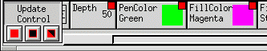
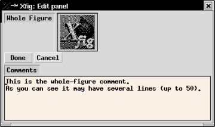
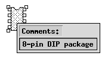
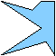
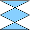
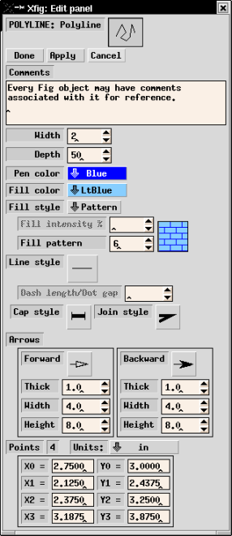
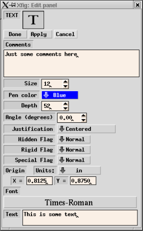
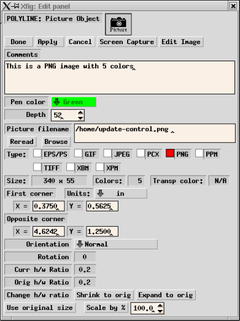
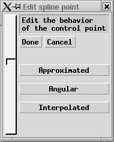

Delete Object
Delete Object
 Add Tangent or Normal to Curve
Add Tangent or Normal to Curve
This is useful to move or copy some objects together at the same time. It is also possible to scale part of a figure by scaling a COMPOUND object after making part of the figure COMPOUND.
Clicking on an object with mouse button 1 (`tag object') will tag the object. Clicking one corner of a rectangular region with mouse button 2 (`tag region') and then clicking mouse button 2 (`final corner') again at the opposite corner of the rectangular region will tag all objects inside the region. After tagging all objects to be glued into a COMPOUND object, clicking mouse button 3 (`compound tagged') will glue those objects and make them a COMPOUND object.
If an already tagged object is selected by mouse button 1 or mouse button 2, that object will be untagged. If you want to remove all tags, change the mode temporarily to any other mode (e.g. "move object") except BREAK COMPOUND.
The COMPOUND object may be separated into component objects by BREAK COMPOUND.
Clicking a COMPOUND object with mouse button 1 (`break compound') will break the COMPOUND into separate component objects. Clicking with mouse button 2 (`break and tag') will also achieve the same effect, but it will tag those component objects for re-gluing with GLUE COMPOUND again.
If you want to edit component objects without breaking the COMPOUND object, you may open the COMPOUND object temporarily using OPEN COMPOUND.
Clicking a COMPOUND object with mouse button 1 (`open compound') will open the COMPOUND object, and then the component objects may be edited. All other objects which were not in the COMPOUND object will become invisible temporarily, but they will reappear after all COMPOUND objects are closed.
If mouse button 2 (`open, keep visible') is clicked on the COMPOUND, the other objects not in the COMPOUND object will become shades of gray, making it easy to align objects inside the compound with those outside.
A popup panel with two buttons to close the COMPOUND objects (Close This Compound and Close All Compounds) will appear when a COMPOUND object is opened, and the open COMPOUND may be closed again using those buttons. Clicking Close This Compound will close the COMPOUND object last opened, and clicking Close All Compounds will close all nested, opened COMPOUND objects.
If you want to break a COMPOUND object into component objects, use BREAK COMPOUND.
If the File/Save is attempted while a compound is open, xfig will ask if you want to save only the open COMPOUND object (Save Part) or the whole figure (Save All).
 Note:
If you open a COMPOUND object,
delete an object in that COMPOUND object,
close the COMPOUND object and
Undo the delete operation,
the object you deleted will reappear but it will outside of the COMPOUND object.
Conversely, if you delete an object from the canvas,
open a compound then undo the delete of the original object,
it will now be part of the open compound.
In this way you may add or remove selected objects from a COMPOUND.
Note:
If you open a COMPOUND object,
delete an object in that COMPOUND object,
close the COMPOUND object and
Undo the delete operation,
the object you deleted will reappear but it will outside of the COMPOUND object.
Conversely, if you delete an object from the canvas,
open a compound then undo the delete of the original object,
it will now be part of the open compound.
In this way you may add or remove selected objects from a COMPOUND.
With this feature you may join lines or splines together or split a line or spline into two objects. Also, you may close an open line (make it a polygon) or spline (closed spline) or open a box, polygon or closed spline.
To join two lines or two splines together click mouse button 1 (`Join lines/splines') to select the first endpoint and again (`Choose next point') to select the second endpoint to be joined. If the endpoints are on the same line or spline, it will make a closed object.
To split a line or spline into two separate objects or to convert a box or polygon to a line, or to open a closed spline, click mouse button 2 (`Spline line/spline') between two the points on the line/spline etc.
The Chop operation allows you to chop polylines, arcs, and circles into individual objects that, together, approximate the original object. (Ellipses will be supported in a future release.)
Left-clicking on one or more objects selects them as "axes". When another object is subsequently selected with a middle click, all possible intersections between that object and all "axe" objects are computed. These intersections are then used to create a collection of new objects that approximate the original. Additional "axe" objects can be added at anytime, and any number of objects may be chopped. Right-clicking clears the axe list.
Circles will be partitioned into pie-wedge arcs and arcs will be partitioned into either open or pie-wedge arcs, depending on the type of the original arc. (In both cases, the type can be changed by editing the newly created objects.) Open polylines and unconstrained polygons (i.e., closed polylines other than boxes, arcboxes, and picture boxes) will be chopped into one or more objects of the same type. Constrained polygons cannot be chopped.
How polygons are chopped is controlled by the "Arc Type" mode in the indicator panel. If "Open" mode is selected, the polygons that result from the cut operation will defined only by the vertices of the original polygon and the intersection points; "Closed" mode will result in polygons that include, in addition to the original vertices and intersects, the geometric centerpoint of the original polygon.
Chop operations cannot (yet) be undone.
Clicking any corner of BOX, ARC-BOX, or COMPOUND object with mouse button 1 (`scale box') and dragging the mouse will start scaling the object proportionally to its horizontal/vertical ratio. Clicking any edge of that object with mouse button 1 (`scale box') will start scaling the object only in one dimension (width or height). The scaling operation is finished by clicking mouse button 1 (`new position') again.
Clicking on an object with mouse button 2 (`scale about center') will scale the object proportionally about its center. The scaling operation is finished by clicking mouse button 2 (`new position') again.
In any case, The scaling operation may be canceled by clicking mouse button 3 (`cancel').
It is not possible to scale TEXT objects directly with this function. To scale TEXT objects, use EDIT OBJECT or UPDATE and change the size of the text (see TEXT SIZE). However, if a COMPOUND object that includes TEXT objects is scaled, the TEXT objects will also be scaled if the Rigid flag is not set.
You may use also MOVE POINT if you want to scale an object such as a BOX without keeping its horizontal/vertical ratio.
How objects are aligned is set by VERTICAL ALIGN and HORIZONTAL ALIGN.
Clicking on a COMPOUND object with mouse button 1 (`align compound') will align objects within the COMPOUND object. Clicking mouse button 2 (`align canvas') anywhere on the canvas will align all objects to the canvas.
Select the point to be moved by clicking the point with mouse button 1 (`move point'), and finish the move by click mouse button 1 (`new position') again after moving mouse to the new point. If you want to restrict the move to horizontal or vertical, use mouse button 2 (`horiz/vert move') instead of mouse button 1. The operation may be canceled by clicking mouse button 3 (`cancel') in either case.
This may not be used for TEXT objects. For BOX, ARC-BOX, and COMPOUND objects, not only the selected point but the edges connected to the point will be moved. The object created by REGULAR POLYGON is an ordinary POLYGON object, and only the selected point will be moved.
Points may also be added or deleted. If you want to move entire object, use MOVE instead.
Clicking mouse button 1 (`break/add here') between two points of an object will add a new point at that location, and the point will move following mouse cursor. The operation is finished by clicking mouse button 1 (`place new point') again.
It is not possible to add a point to BOX or ARC-BOX objects. The object created by REGULAR POLYGON is an ordinary POLYGON object, and it is possible to add new points anywhere in it.
Points may also be moved or deleted.
Clicking a point to be deleted with mouse button 1 (`delete point') will delete the point, and the points on either side of the point will connected directly.
It is not possible to delete points from a BOX or ARC-BOX object. The object created by REGULAR POLYGON is ordinary POLYGON object, and it is possible to delete points from it.
Points may also be moved or added.
Select the object to be moved by clicking the object with mouse button 1 (`move object'), and finish the move operation by clicking mouse button 1 (`place object') again at the new position. If you want to restrict the movement to horizontal or vertical, use mouse button 2 (`horiz/vert move') instead of mouse button 1. The operation may be canceled by clicking mouse button 3 (`cancel') in either case.
If you want to move several objects at one time, you may put them into a COMPOUND object using GLUE COMPOUND.
By setting SMART-LINKS MODE, it is possible to move the endpoints of lines which touch the object as you move the object itself. Additionally, endpoints of lines which fall inside a COMPOUND object will also be moved. The SMART-LINKS feature only works with POLYLINES (not splines) touching a BOX, ARC-BOX, or COMPOUND.
Objects may also be copied or deleted. If you want to move a point of the object, use MOVE POINT instead.
Select the object to be copied by clicking the object with mouse button 1 (`copy object'), and finish the copy operation by clicking mouse button 1 (`place object') again at the position to place the copy. If you want to restrict the movement to horizontal or vertical, use mouse button 2 (`horiz/vert copy') instead of mouse button 1. The operation may be canceled by clicking mouse button 3 (`cancel') in either case.
If you want to copy several objects at the same time, you may put them a COMPOUND object using GLUE COMPOUND.
By setting SMART-LINKS MODE, it is possible to copy the lines which touch the object as you move the object itself. This only works with POLYLINES (not splines) touching a BOX or ARC-BOX.
It is also possible to make many copies in this mode, using ARRAY PLACEMENT. To do this, first set the number of copies to be created by setting NUMBER OF X COPIES and NUMBER OF Y COPIES. Then select the object to be copied by clicking the object with mouse button 1 (`copy object') or 2 (`constrained copy'), and specify the direction and distance to place the copies by clicking mouse button 2 (`array placement') after moving the mouse. Normally, objects will be placed on the array of NUMBER OF X COPIES and NUMBER OF Y COPIES, but when either of them is set 0 or 1, copies of specified number will be generated and they can be placed obliquely. For example, if the number of X copies is 3 and the number of Y copies is 0 or 1, the copied objects will be placed along the X direction at the same Y position as the original object.
Clicking an object with mouse button 3 (`copy to cut buf') will copy the object to the xfig cut buffer. The object copied into the xfig cut buffer may be inserted into the figure on the canvas using Paste Objects. This allows you to copy part of a figure to another figure. Any object in the xfig cut buffer will be overwritten when the new object is copied into the xfig cut buffer. To copy multiple objects into the xfig cut buffer, you must first put them into a COMPOUND object using GLUE COMPOUND.
Objects may also be moved or deleted.
Delete object
Clicking an object with mouse button 1 (`delete object') will remove the object. It is also possible to remove objects in a rectangular region by clicking mouse button 2 (`delete region') at one corner of the region and then again (`final corner') again at the opposite corner.
Clicking an object with mouse button 3 (`del to cut buf') will remove the object from the canvas and move it to the xfig cut buffer. The object moved into the xfig cut buffer may be inserted into the figure on the canvas using Paste Objects later. See also COPY.
If you want to delete all objects from the canvas to make a new figure, you may use New.
Update the attributes (such as line width or colors) of object with the current settings in the Attribute Panel. Conversely, it is also possible to copy the attributes of an object to the attribute panel.
Clicking an object with mouse button 1 (`update object') will apply the current settings of the attribute buttons selected for UPDATE to the object. If a COMPOUND object is clicked with mouse button 1 (`update object'), the attributes of all the objects in the COMPOUND object will be updated.
Clicking an object (except a COMPOUND object) with mouse button 2 (`update settings') will copy the attributes of the object to the attribute buttons which are selected for UPDATE. This allows you to copy attributes from one object to another object.
In UPDATE mode, a small toggle button appears in the upper-right corner of each attribute button, and only the attribute buttons whose toggle button is set ON will be used for update. Clicking the toggle button at the upper-right corner of an attribute button will toggle the button ON/OFF. It is also possible to select, unselect, or toggle all attribute buttons, using Update Control buttons at the left side of the attribute panel.

The attributes of objects may also be modified using EDIT OBJECT. Some attributes can't be modified by UPDATE but may be modified by EDIT OBJECT.
Clicking an object with mouse button 1 (`edit object') will popup the Edit Panel to edit the attributes. The items in the panel depend on the object being edited. See Edit Panel for more information.
Clicking a control point of a SPLINE object with mouse button 3 (`edit point') will popup EDIT POINT panel to modify the shape factor of the spline curve.
The attributes of objects may also be modified using UPDATE, but some attributes can't be modified with UPDATE.
If mouse button 2 (`edit Fig comments') is clicked on the canvas,
the edit panel will popup to allow the user to change the comments
associated with the whole figure:

If the Shift key is held down while mouse button 2 (`show comments')
is clicked on an object, any comments in the object are displayed
in a popup until the mouse button is released:

Clicking the object with mouse button 1 (`flip') will flip the object vertically/horizontally about that point. Clicking the object with mouse button 2 (`copy & flip') will make copy of the object flipped vertically/horizontally about that point, leaving original object as it was.
It is also possible to set the anchor point about which the object will be flipped, by clicking mouse button 3 (`set anchor') at the point. A crosshair (+) indicates the anchor point on the canvas. The anchor point may be removed by clicking mouse button 3 (`set anchor') again.
To rotate an object, use ROTATE.
Clicking an object with mouse button 1 (`rotate object') will rotate the object to clockwise or counter-clockwise by the angle specified by ROTATION ANGLE about the point that is clicked.
It is also possible to make many copies in this mode, using COPY & ROTATE. Clicking object with mouse button 2 (`copy & rotate') may make many copies rotated by the angle specified by the ROTATION ANGLE. The number of copies to be created may be set by NUMBER OF COPIES.
As in FLIP VERTICALLY/HORIZONTALLY, it is possible to set the anchor point about which the object will be rotated, by clicking mouse button 3 (`set anchor').
BOX, ARC-BOX and PICTURE objects, and COMPOUND objects containing any of those objects may only be rotated by multiples of 90 degrees. To flip object vertically or horizontally, use FLIP VERTICALLY/HORIZONTALLY.
Clicking an object with mouse button 1 (`spline <-> line') will perform a conversion thus:
 polyline --> open approximated spline -->
open interpolated spline --> polyline
polygon --> closed approximated spline -->
closed interpolated spline --> polygon
box --> arc-box --> box
polyline --> open approximated spline -->
open interpolated spline --> polyline
polygon --> closed approximated spline -->
closed interpolated spline --> polygon
box --> arc-box --> box
Clicking an object with mouse button 3 (`open <-> close') will perform a conversion thus:
polyline <-> polygon
open approximated spline <-> closed approximated spline
open interpolated spline <-> closed interpolated spline
Finer control is possible for spline curves. See EDIT POINT and About Spline Curves for more information.
Clicking the end point of object with mouse button 1 (`add arrow') will add an arrow head to that end. Clicking an arrow head with mouse button 2 (`delete arrow') will remove the arrow head.
This operation is only valid for POLYLINE, OPEN SPLINE, or OPEN ARC objects.
The shape of the arrow head may be set by ARROW TYPE. The size of arrow head may be set by ARROW SIZE. It is also possible to automatically create arrow heads when creating new objects by setting ARROW MODE.
Add Tangent or Normal to Curve
Clicking mouse button 1 near a curve of an arc or spline will create a 2cm line tangent to the curve, with the current line attributes such as thickness, color, etc. The line has three points, with the middle point touching the original curve.
Clicking mouse button 2 near a curve will create a 2cm line normal to the curve.
Clicking mouse button 1 on a vertex of a polyline or polygon will report (in the message window below the main menus) the angle between the two lines meeting at the vertex.
Clicking mouse button 1 on any three points in the canvas will report the angle between the two lines formed by the three points.
Clicking mouse button 2 on the vertex of a polyline or polygon will report the angle between the two lines meeting at the vertex, and save the angle in the current rotation angle setting in the attributes panel.
Clicking mouse button 1 on any polyline, polygon, box, arc or circle/ellipse will report (in the message window below the main menus) the length of the lines forming the object, or the perimeter for a circle or ellipse.
Clicking mouse button 2 on such an object will add the length to a running sum and report the individual and accumulated lengths.
Clicking mouse button 3 will reset the accumulated length to 0.
Clicking mouse button 1 on any polyline, polygon, box or circle/ellipse will report (in the message window below the main menus) the area of the object.
Clicking mouse button 2 on such an object will add the area to a running sum and report the individual and accumulated areas.
Clicking mouse button 3 will reset the accumulated area to 0.
The area for polygons that have overlapping parts will not be calculated correctly.
This should be fixed in a future version.
Will work correctly:

Will NOT work correctly:

 Selecting Objects
Selecting ObjectsMost objects may also be selected by clicking on the line connecting corner markers, but it may have a different meaning in some editing modes. For example in the SCALE OBJECT mode, clicking on a corner marker will scale the object proportionally to its horizontal/vertical ratio, but clicking on a line connecting corner markers (edge of the rectangle) will scale the object only in that direction (i.e. horizontally or vertically).
If POINT POSITION is set to other than Any, objects which are not on the virtual grid may not be be selected.
When object corners or edges are coincident, clicking on the object may not select the desired object but the other object instead. In this case, the desired object may be selected with following operations:

 Comments
Width
Pen Color
Fill Color
Depth
Fill Style
Line Style
Cap Style
Join Style
Arrows
Corner Radius
Center, Radius, Points, etc.
Note: For these entries, you may enter values followed by either "c" or "i"
for centimeters or inches respectively.
Comments
Width
Pen Color
Fill Color
Depth
Fill Style
Line Style
Cap Style
Join Style
Arrows
Corner Radius
Center, Radius, Points, etc.
Note: For these entries, you may enter values followed by either "c" or "i"
for centimeters or inches respectively.

Size
Pen Color
Depth
Angle
Justification
Hidden Flag, Rigid Flag, and TeX Flag
Origin
Font
Text

Screen Capture
You can't use this facility if visual of your display is TrueColor or it is deeper than 8 bits.
Edit Image
Pen Color
Depth
Picture Filename
Type, Size, and Number of colors
Reread
Browse
First Corner, and Opposite Corner
Orientation
Rotation
Cur H/W Ratio and Orig H/W Ratio
Change H/W Ratio

Clicking Approximated, Angular, or Interpolated button will set the shape factor to a preset value. The shape factor may also be set to arbitrary values by moving the slider on the left side of the panel. The modified spline curve will be displayed interactively in either case.
The shape factor of a control point may also be modified without popping up the Edit Point panel by clicking the control point while pressing both of SHIFT key and CONTROL key. Clicking a control point with mouse button 1 (`More approx') will decrease the shape factor, and clicking a control point with mouse button 3 (`More interp') will increase the shape factor. Clicking a control point with mouse button 2 (`Cycle shape') will cycle through three preset values: Approximated, Angular, and Interpolated.
![[Spline - Shape Factor]](images/spline-sf-example.png)